Hola a tod@s, espero estén muy bien, el día de hoy damos
inicio a este blog titulado “La Vida Diaria De Un Estudiante”; aquí podremos
compartir nuestras vivencias como estudiantes, las cosas buenas, difíciles,
tips, etc., espero te guste mucho este blog, disfrútalo y compártelo; ahora si
lee los siguientes artículos donde encontraras información mas detallada de las
secciones de este blog :D.
| Temas | ¿De que trata? | constacia de publicaciones |
|---|---|---|
| Estudio | Te compartire algunos tips, consejos, mis rutinas y hablaremos de que es estudiar de una manera distinta | cada semana |
| Blogs | Videos o articulos mas detallados de mis rutinas, formas de estudio, estudios y blogs diarios | Dos jueves al mes |
| Tips | Como su nombre lo dice seran tips, pequeños listados disponibles en esta paguina | El primer lunes de cada mes |
Estudio
Como cualquier estudiante, tenemos varios deberes importantes,
como tareas, exámenes, clases, etc.; pero el estudio es algo que podemos
convertir en algo aburrido en algo super divertido, es por esta razón
que te enseñare lo que yo ahogo para automotivarme; así que estas son algunas cosas que hago:
- Automotivación 👇🏼
- Escuchar música tranquila para estudiar
- Ponte metas que si va a cumplir
- Levántate temprano
- Estudia algo que te apasione
Yo escucho la música lofi hip-hop wordship, esta música ayuda a la concentración
cuando estoy estudiando
Cuando nos plateamos objetivos que, si cumpliremos en el dia, al terminar
sentimos la satisfacción de haber cumplido todo.
Cuando iniciamos el día muy temprano en la mañana podemos organizar nuestro lugar de trabajo,
limpiar nuestra casa, y comenzamos a hacer nuestras tareas, así tendremos más tiempo
en la tarde de hacer distintas cosas que nos gusten más que estudiar 😉
Ya sea que estemos en el colegio, universidad o trabajo, saquemos el
tiempo de estudiar algo que nos apasione mucho, como la pintura,
algún idioma etc., las posibilidades son infinitas.
Y esto solo fue un aperitivo de lo que estaremos hablando en este tipo de artículos.
Blogs
Para esta parte de la página no hay tantas cosas de las
que hablar, básicamente estaremos publicando videos aquí;
mis rutinas de estudio, blogs diarios, semanales, salidas de estudio,
tips, ,. entre otras cosas.
Tips
En esta sección te estaré dando algunos concejos sobre
como estudiar o distintos temas de los cuales estaremos
hablando aquí. Por ejemplo podemos comenzar con algunos
tips para tener el mejor espacio de concentración
para estudiar
- Escucha música: por ejemplo Lofi hip-hop worldship
- Ponte ropa comoda, pero que no sea tu pijama
- Limpia tu espacio de estudio
- Comienza con las tareas más largas
- Date descansos de 10min por 2 horas de trabajo
Una muestra...
Hola espero estes muy bien, en esta ocación te enseñare mi ensayo fotografíco de artistica este año trabajamos fotografía, así que espero te guste pero primero el detras de camará
 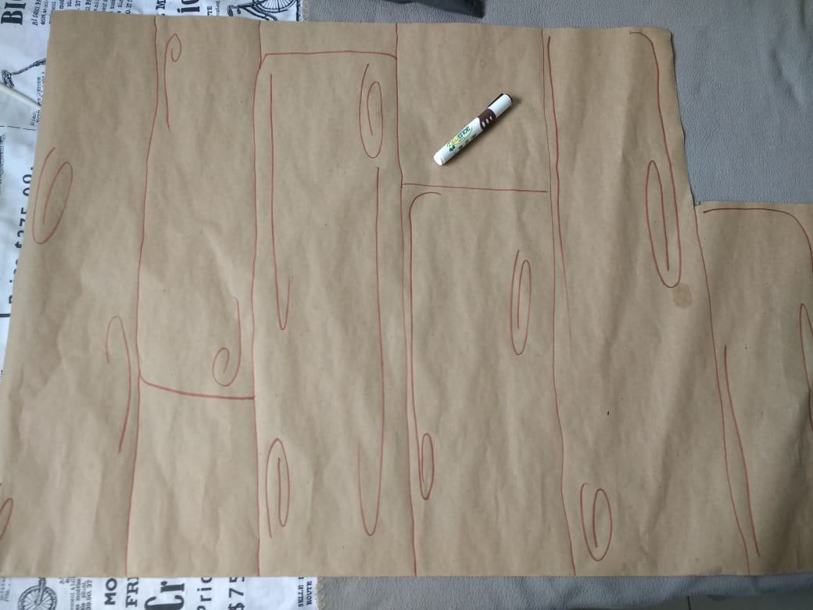
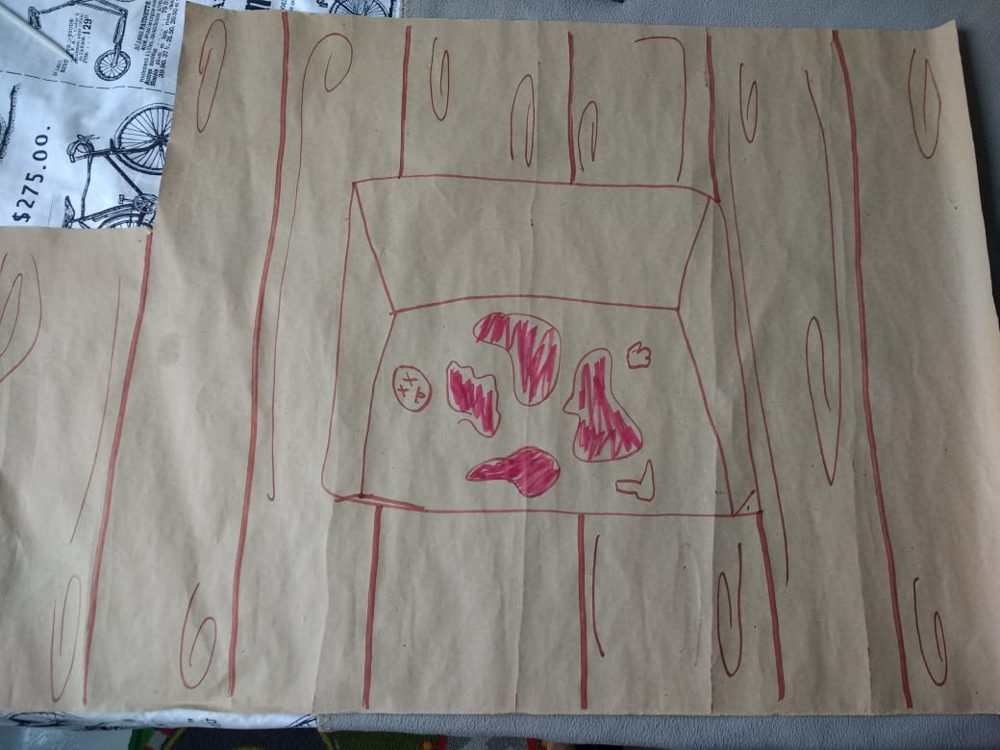
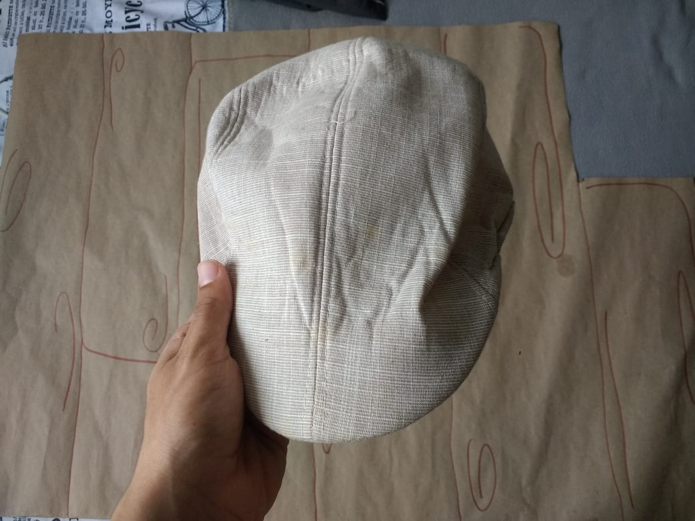
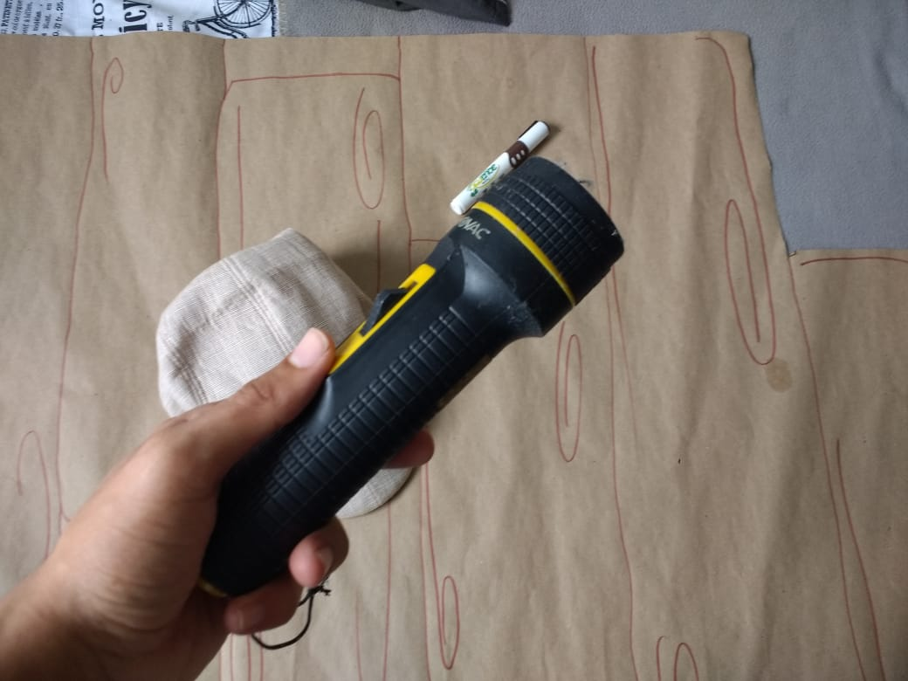
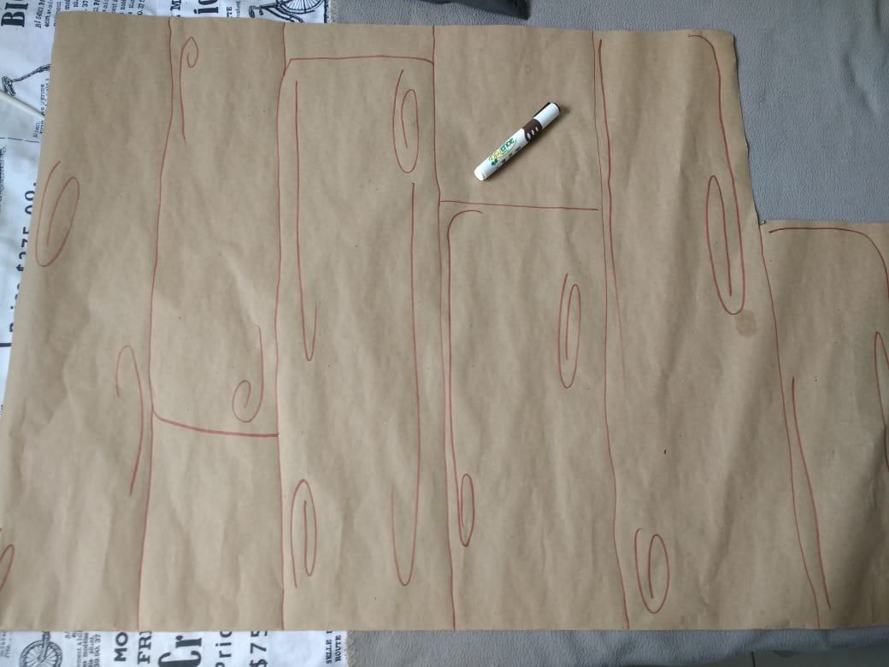
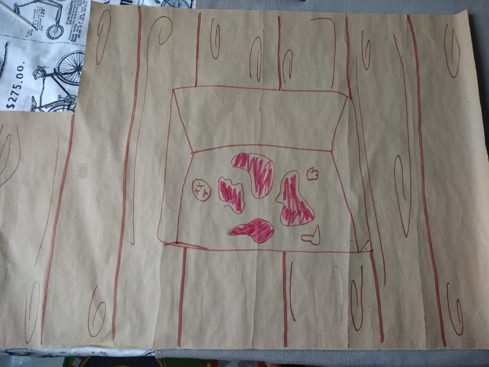
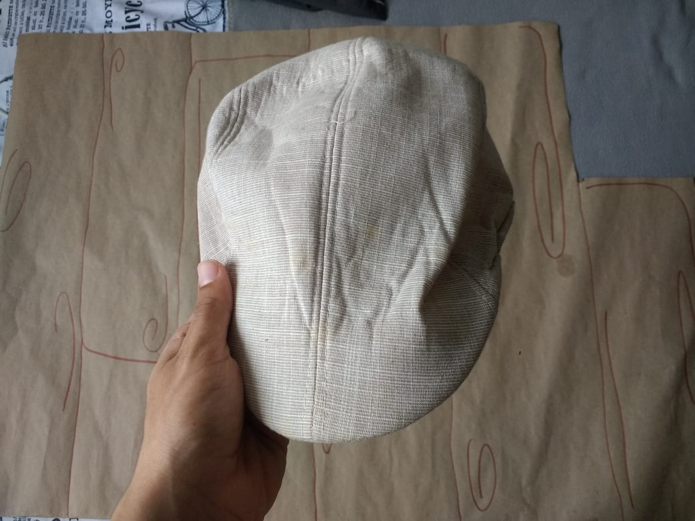
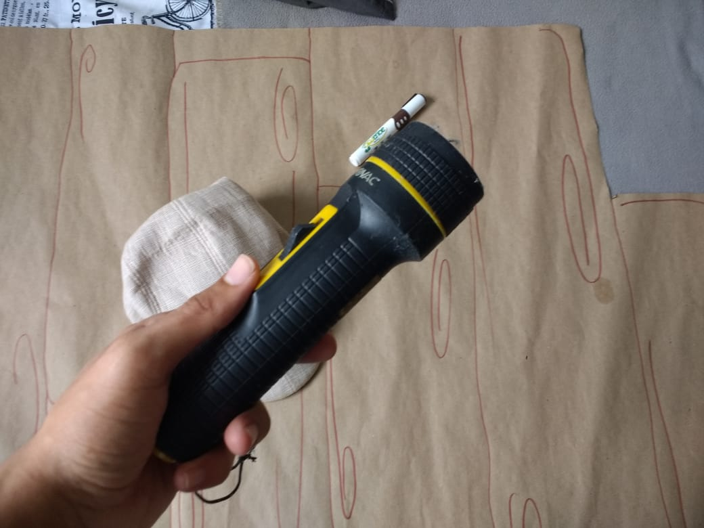
El corazón delator, ¿cuan loco estoy?
El corazón delator es una historia de Edgar Allan Poe, donde relata la historia de un asesino,
y como su o conciencia agobian hasta confesar su crimen y ser arrestado; para este
ensayo fotográfico tome inspiración en este escrito, específicamente en el siguiente fragmento:
“Ante todo descuarticé el cadáver. Le corté la cabeza, brazos y piernas.
Levanté luego tres planchas del piso de la habitación y escondí los restos en el hueco.
Volví a colocar los tablones con tanta habilidad que ningún ojo humano -ni siquiera el suyo- hubiera podido advertir la menor diferencia.
No había nada que lavar... ninguna mancha... ningún rastro de sangre. Yo era demasiado precavido para eso. Una cuba había recogido todo...
¡ja, ja!
Cuando hube terminado mi tarea eran las cuatro de la madrugada, pero seguía tan oscuro como a medianoche.
En momentos en que se oían las campanadas de la hora, golpearon a la puerta de la calle. Acudí a abrir con
toda tranquilidad, pues ¿qué podía temer ahora?
Hallé a tres caballeros, que se presentaron muy civilmente como oficiales de policía. Durante la noche,
un vecino había escuchado un alarido, por lo cual se sospechaba la posibilidad de algún atentado.
Al recibir este informe en el puesto de policía, habían comisionado a los tres agentes para que registraran el lugar.
Sonreí, pues... ¿qué tenía que temer? Di la bienvenida a los oficiales y les expliqué que yo había lanzado aquel
grito durante una pesadilla. Les hice saber que el viejo se había ausentado a la campaña. Llevé a los visitantes a recorrer la casa y los invité a que revisaran, a que revisaran bien. Finalmente,
acabé conduciéndolos a la habitación del muerto. Les mostré sus caudales intactos y cómo cada cosa se hallaba en su lugar. En el entusiasmo
de mis confidencias traje sillas a la habitación y pedí a los tres caballeros que descansaran allí de su fatiga, mientras yo mismo,
con la audacia de mi perfecto triunfo, colocaba mi silla en el exacto punto bajo el cual reposaba el cadáver de mi víctima.
Los oficiales se sentían satisfechos. Mis modales los habían convencido. Por mi parte, me hallaba perfectamente cómodo.
Sentáronse y hablaron de cosas comunes, mientras yo les contestaba con animación. Mas, al cabo de un rato,
empecé a notar que me ponía pálido y deseé que se marcharan. Me dolía la cabeza y creía percibir un zumbido en los oídos;
pero los policías continuaban sentados y charlando. El zumbido se hizo más intenso; seguía resonando y era cada vez más intenso.
Hablé en voz muy alta para librarme de esa sensación, pero continuaba lo mismo y se iba haciendo cada vez más clara... hasta que,
al fin, me di cuenta de que aquel sonido no se producía dentro de mis oídos.
Sin duda, debí de ponerme muy pálido, pero seguí hablando con creciente soltura y levantando mucho la voz.
Empero, el sonido aumentaba... ¿y que podía hacer yo? Era un resonar apagado y presuroso...,
un sonido como el que podría hacer un reloj envuelto en algodón. Yo jadeaba, tratando de recobrar el aliento,
y, sin embargo, los policías no habían oído nada. Hablé con mayor rapidez, con vehemencia, pero el sonido crecía continuamente.
Me puse en pie y discutí sobre insignificancias en voz muy alta y con violentas gesticulaciones; pero el sonido crecía continuamente.
¿Por qué no se iban? Anduve de un lado a otro, a grandes pasos, como si las observaciones de aquellos hombres me enfurecieran;
pero el sonido crecía continuamente. ¡Oh, Dios! ¿Qué podía hacer yo? Lancé espumarajos de rabia... maldije... juré...
Balanceando la silla sobre la cual me había sentado, raspé con ella las tablas del piso, pero el sonido sobrepujaba todos los otros y crecía sin cesar. ¡Más alto... más alto... más alto!
Y entretanto los hombres seguían charlando plácidamente y sonriendo. ¿Era posible que no oyeran?
¡Santo Dios! ¡No, no! ¡Claro que oían y que sospechaban! ¡Sabían... y se estaban burlando de mi horror!
¡Sí, así lo pensé y así lo pienso hoy! ¡Pero cualquier cosa era preferible a aquella agonía!
¡Cualquier cosa sería más tolerable que aquel escarnio! ¡No podía soportar más tiempo sus sonrisas hipócritas! ¡Sentí que
tenía que gritar o morir, y entonces... otra vez... escuchen... más fuerte... más fuerte... más fuerte... más fuerte!
-¡Basta ya de fingir, malvados! -aullé-. ¡Confieso que lo maté! ¡Levanten esos tablones! ¡Ahí... ahí!
¡Donde está latiendo su horrible corazón!
FIN”
(El corazón Delator), (Edgar Allan Poe), (1843)
EL nombre de este ensayo es “El Corazón Delator, ¿Cuan Loco Estoy?”
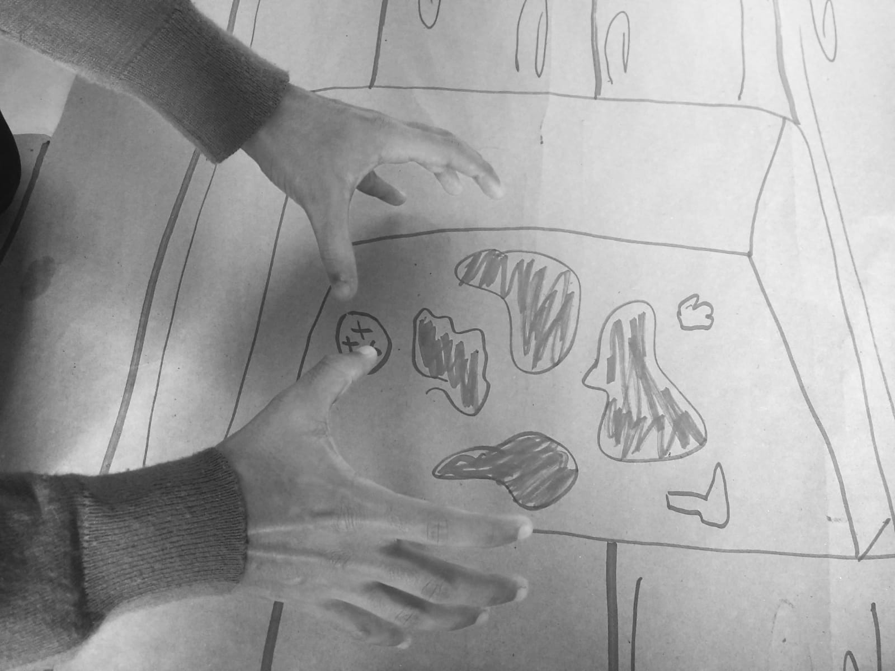 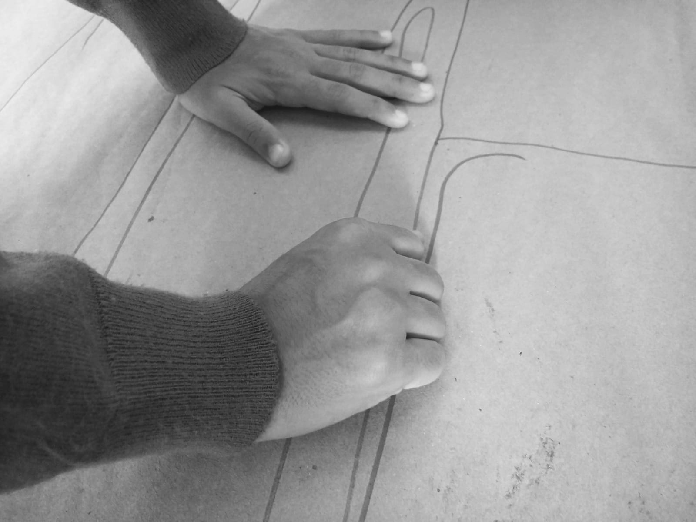 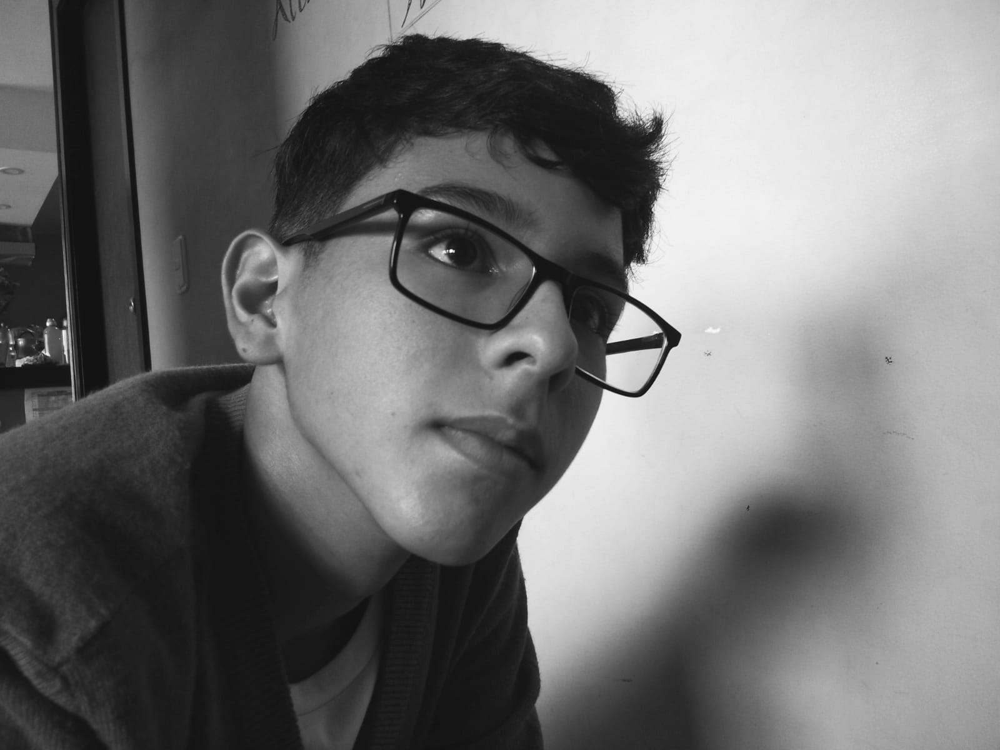 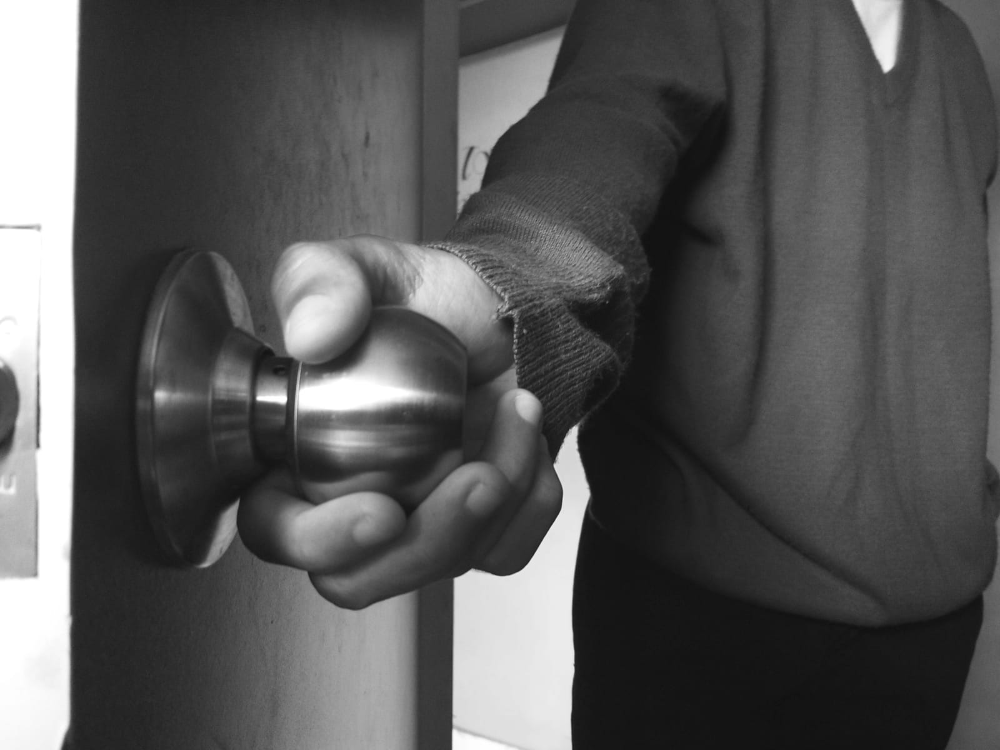 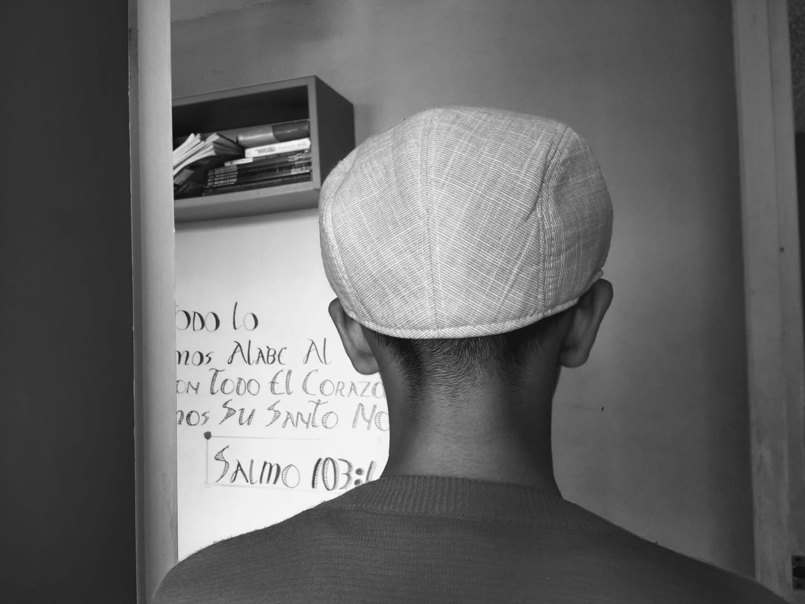 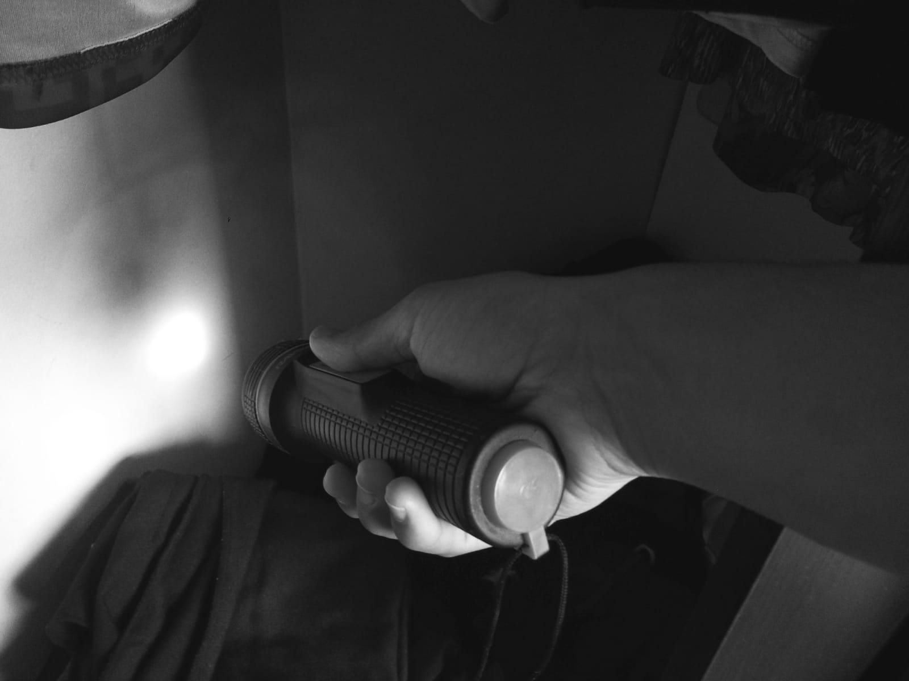 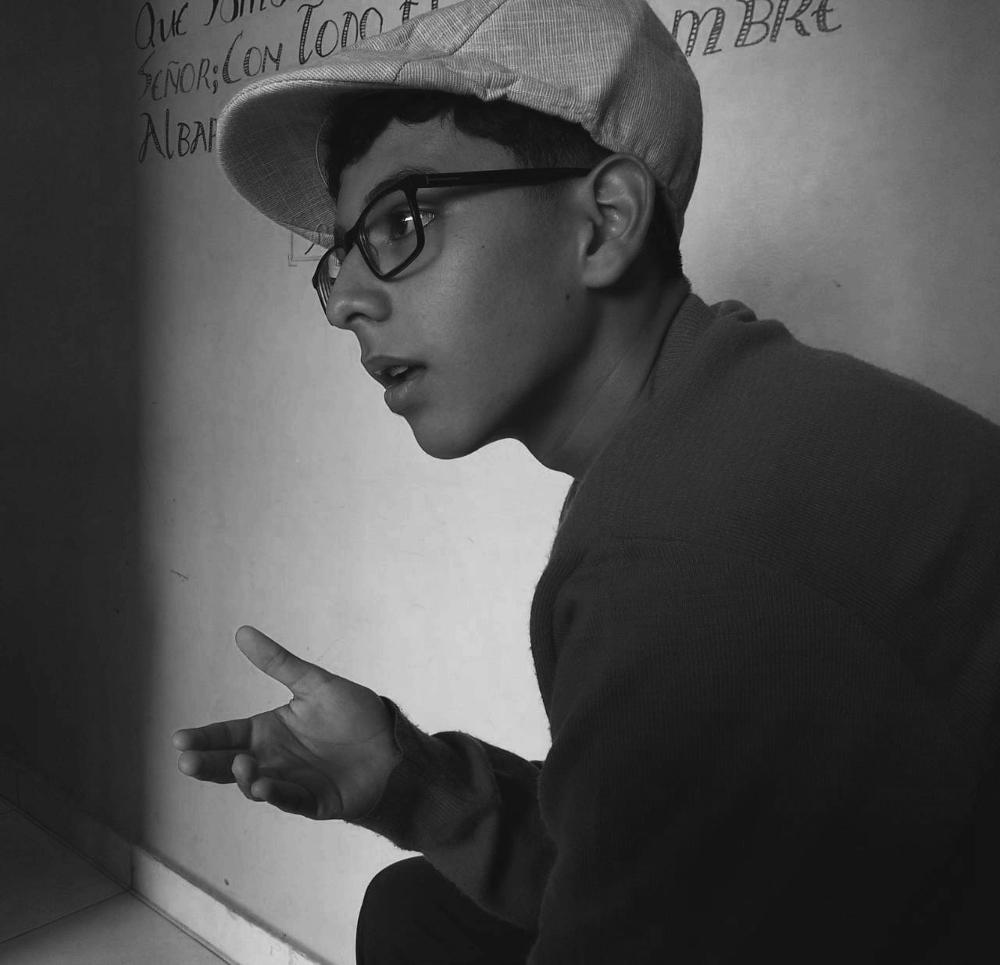 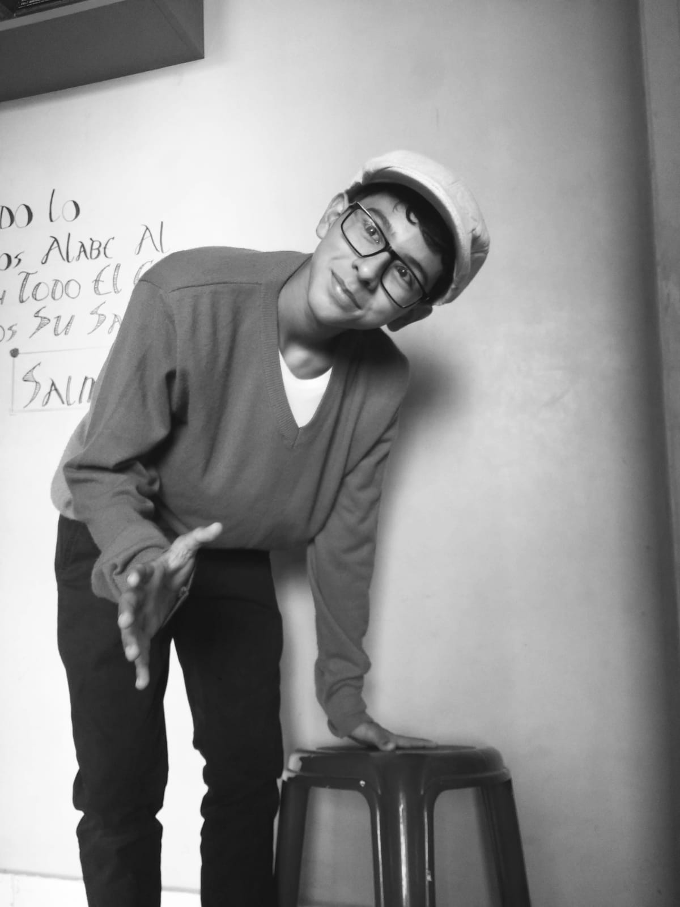 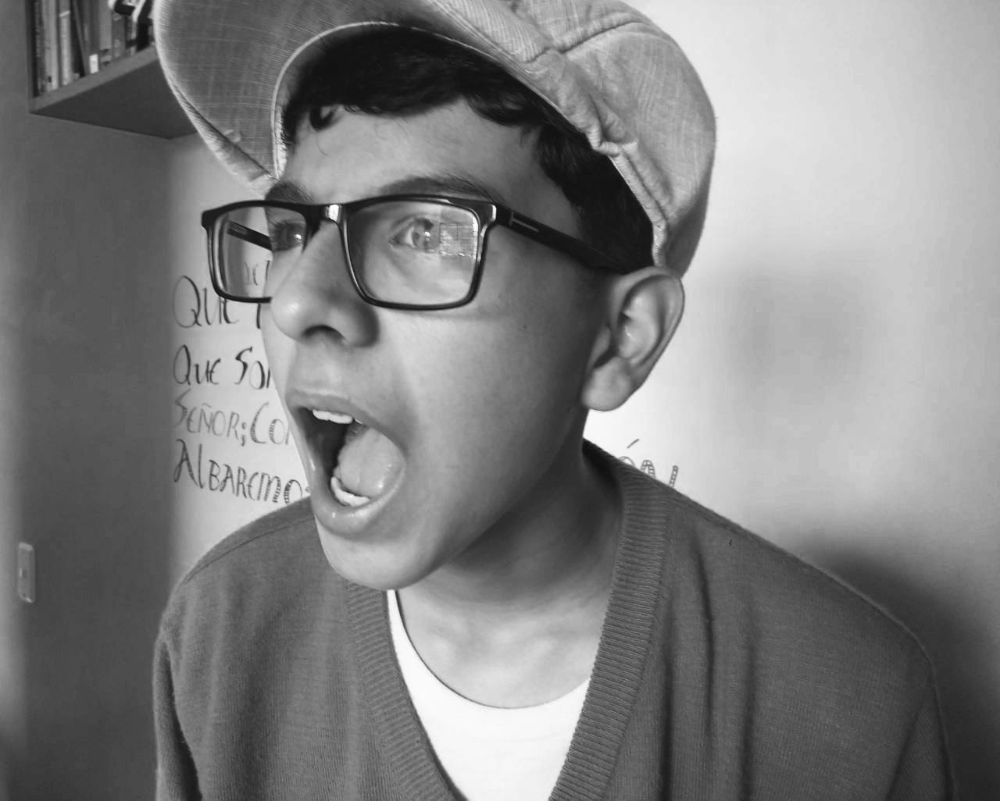 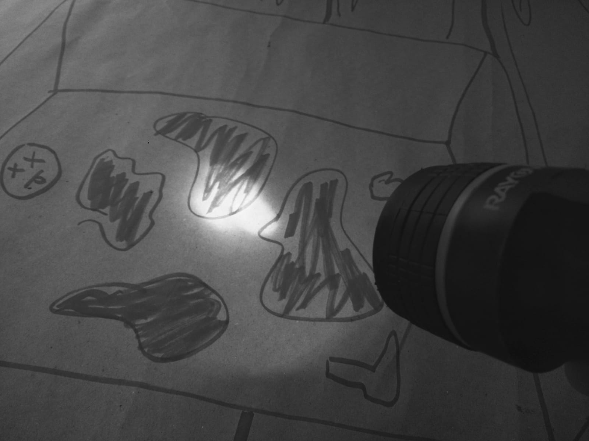 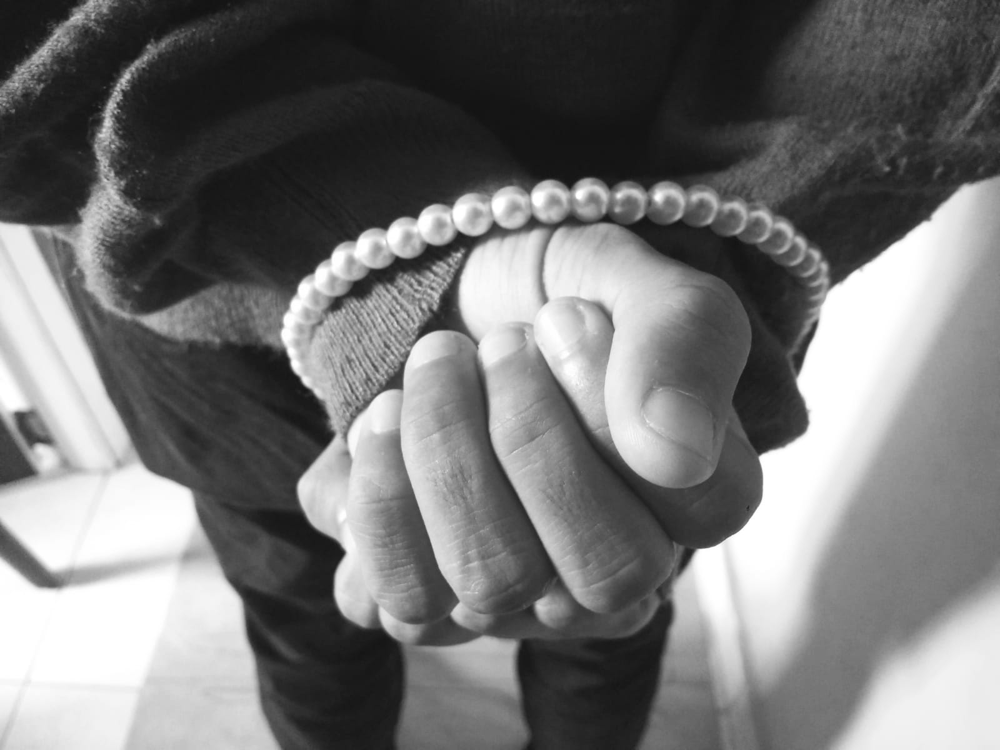
¿Ahora quien escribe este blog?
Hola, soy Alejandro Rojas, estudiante de Skolmi, curso el grado 10°; Este soy yo :D
soy alguien que le gusta mucho el arte, la fotografía, ver series, películas, animes,
la música, realmente hago muchas cosas, soy creador de
“Entre Jóvenes Podcast”
y “Hablemos Podcast”.

Sí la imagen no puede visualizarce este es el link